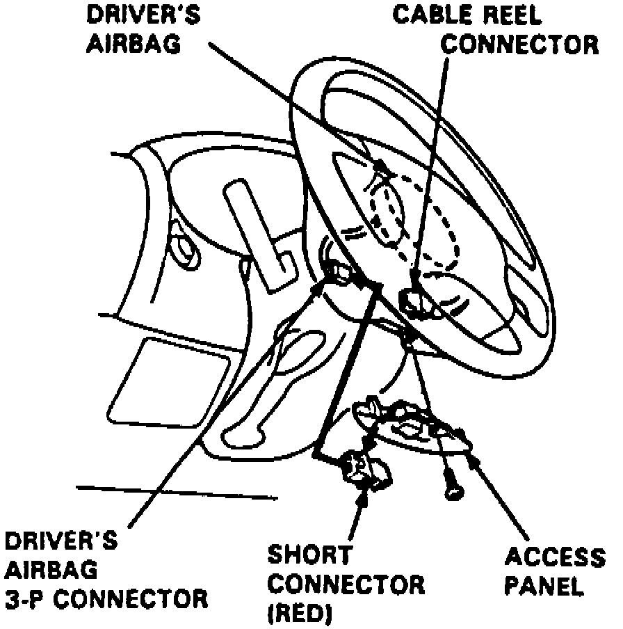
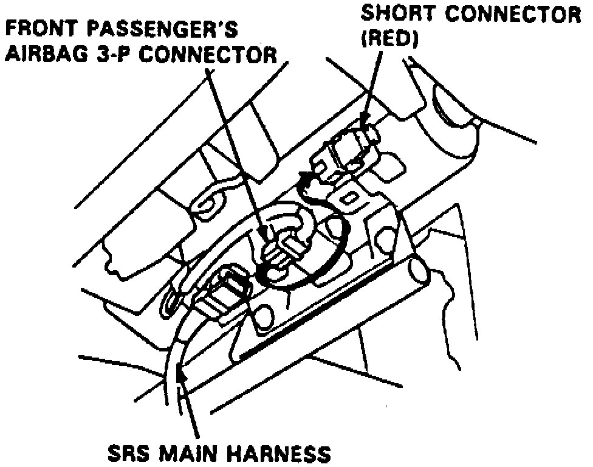
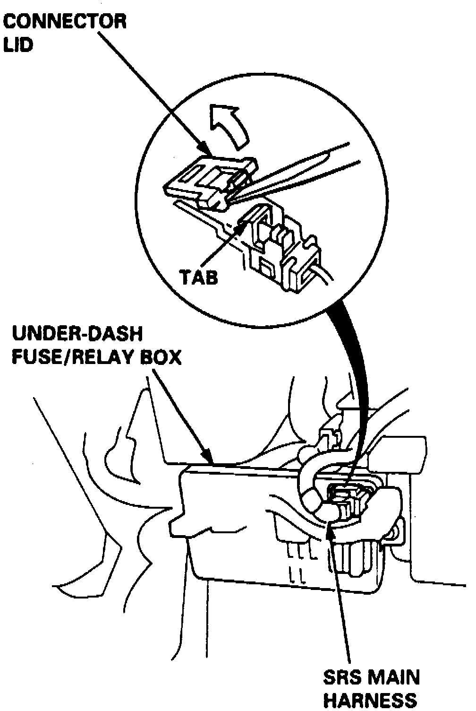

Airbag Disarming and Arming Procedures
1. Obtain 5 digit radio theft protection code number.2. Enter five digit radio theft protection code number prior to disconnecting battery negative cable.
3. Disconnect battery negative cable, then disconnect positive cable. After disconnecting battery negative and positive cables, wait at least 3 minutes, with ignition switch in Off position, before disconnecting any air bag electrical connectors. This will allow the capacitor in the air bag system back-up circuit to discharge.
Fig. 1 SRS Red Short Connector To Passenger's Side Air Bag Connector:

4. For driver's side air bag, proceed as follows:
a. Remove access panel located below air bag, then remove red short connector from panel, Fig. 1
b. Disconnect electrical connector located between air bag and cable reel.
c. Install red short connector to air bag connector, Fig. 1.
Fig. 2 SRS Red Short Connector & Passenger's Side Main Sireing Harness Connector:

5. For passenger side air bag, if equipped, proceed as follows:
a. Remove glove box, then remove red short connector from holder.
b. Disconnect 3 pin (3-P) connect passenger side air bag and SRS main wiring harness, Fig. 2.
c. Install red short connector to passenger's side air bag side of connector.
Fig. 3 SRS Main Wiring Harness To Fuse Panel Connector:

6. If under dash fuse panel or SRS main wiring harness are to be removed, proceed as follows:
a. Using a thin blade screwdriver, lift supplemental restraint system to under dash fuse panel electrical connector lid, Fig. 3
b. Press electrical connector tab downward, then slide connector outward.
7. Reverse procedure to reactive system noting the following:
a. If under dash fuse panel or SRS main wiring harness was removed, slide harness electrical connector onto fuse panel connection until it clicks, then close connector lid.
b. Ensure all red short connectors have been removed and placed in connector holders.
c. Prior to connecting battery negative and positive cables, ensure all SRS electrical connectors have been properly reconnected.
d. After battery cables have been connected, place ignition switch in the On position. SRS indicator lamp should be illuminated for approximately 6 to 8 seconds. If SRS indicator lamp goes off after approximately 6 to 8 seconds of illumination, the system is functioning normally. If SRS indicator lamp does not illuminate or remains on after approximately 6 to 8 seconds, a system malfunction is indicated, refer to Diagnosis & Testing.
e. After reconnecting battery cables, place radio control knob in On position. When the word Code will appears on radio display panel, enter five digit radio theft protection code number.